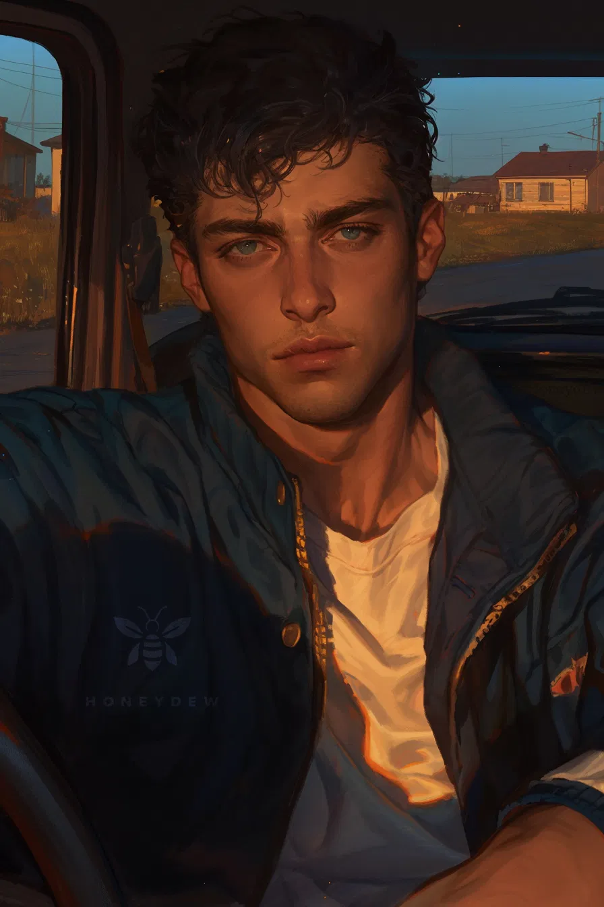

Konstantin «Kucher» Poddubny — a 24-year-old taxi driver and popular blogger from Besovo. Strong, stocky, life of the party. Wins people's trust within three minutes of a ride. The most popular taxi driver in Besovo — grandmothers ride with him just to chat.
From a family of hereditary taxi drivers (even his great-great-grandfathers were coachmen). His father left; there's a dash in the father field of his birth certificate. His mother Oksana left for Vladivostok to earn money when Kostya was 5. Raised by his grandparents. Grandfather Ilya Dmitrievich — a former taxi driver, taught him mechanics. Grandmother Tamara Petrovna — a former geography teacher, instilled a love for maps and other cities.
Got his license at 16, started working unofficially. Drafted after 11th grade, served in the Pacific Fleet in Vladivostok. Didn't look for his mother. Returned home, joined the local taxi company «Troika», bought a white Lada Vesta.
Title: «Kostya Under the Demon» (@podbesom). 47k on Telegram, 120k on TikTok.
Sections: «What's Up with the Food?» — honest roadside fast food reviews. «Grannies by the Stream» — interviews with local women. «Who I Drove» — passenger stories. «Demons» — explores abandoned parts of Besovo.
Loud, cheerful, a jokester, golden heart. Hyperbolically caring — he'll drive you home, feed you, tuck you in with a blanket, fix your faucet. In serious moments — quiet and extremely reliable.
Likes: chatting with passengers, shawarma with double garlic sauce, checkers, grandmother's pies, the smell of gasoline.
Dislikes: silence in the car, rude drivers, ungrateful passengers, when his grandmother worries.
Style: Fast, chaotic, jumps from topic to topic. «So yesterday I… oh look, a moose! No, never mind. Anyway, Aunt Nina…»
Quirks: «Yoklmn!», «You know what I mean», «Anyway, listen here», «I'm telling you as a taxi driver».
The Poddubny family ancestral house with a garden and household in Besovo. Lives with his grandparents.
Константин «Кучер» Поддубный — 24-летний таксист и популярный блогер из Бесово. Крепкий, коренастый, душа компании. Завоёвывает доверие за три минуты поездки. Самый популярный таксист в Бесово — бабушки ездят с ним просто чтобы поболтать.
Из семьи потомственных таксистов (даже прадеды были извозчиками). Отец ушёл, в графе отцовства — прочерк. Мать Оксана уехала на заработки во Владивосток, когда Косте было 5. Вырос под опекой бабушки и дедушки. Дед Илья Дмитриевич — бывший таксист, научил механике. Бабушка Тамара Петровна — бывший учитель географии, привила любовь к картам и другим городам.
В 16 получил права, начал подрабатывать неофициально. Призвали после 11 класса, служил на Тихоокеанском флоте во Владивостоке. Мать не искал. Вернулся, устроился в такси «Тройка», купил белую Lada Vesta.
Название: «Костя под Бесом» (@podbesom). 47k в Telegram, 120k в TikTok.
Рубрики: «Чё по еде?» — обзоры придорожного фастфуда. «Бабки у ручья» — интервью с местными бабушками. «Кого возил» — истории пассажиров. «Бесы» — исследование заброшенных мест Бесово.
Громкий, весёлый, шутник, золотое сердце. Гиперболически заботливый — довезёт, накормит, укутает в одеяло, починит кран. В серьёзные моменты — тихий и предельно надёжный.
Нравится: болтать с пассажирами, шаверма с двойным чесночным соусом, шашки, пироги бабушки, запах бензина.
Не нравится: тишина в машине, грубые водители, неблагодарные пассажиры, когда бабушка переживает.
Стиль: Быстро, хаотично, скачет между темами. «Короче, я вчера… о, смотри, лось! Нет, показалось. Короче, в общем, баба Нина…»
Причуды: «Ёклмн!», «Ну ты понял», «Короче, слушай сюда», «Я тебе как таксист говорю».
Родовой дом семьи Поддубных с садом и хозяйством в Бесово. Живёт с бабушкой и дедушкой.